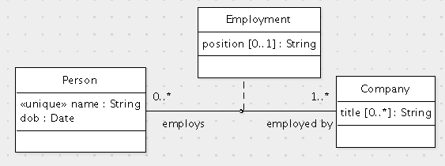

Translate this data model to SQL.
create table Person (
id int primary key,
name varchar(100)
);
create table Mine (
designation varchar(100) primary key,
location varchar(5000) not null
);
create table WorkInterval (
miner int references Person(id)
on update cascade on delete cascade,
mine varchar(100) not null references Mine(designation)
on update cascade on delete cascade,
start datetime not null,
end datetime,
primary key(miner, start),
check (end is null or end > start)
);
Write the following queries in SQL:
A. (8 points) For each miner, list the miner's name and the date when the miner first started working in some mine.
B. (8 points) List the mines by location that have a person named Luis who has worked in the mine.
public void printWorkingMiners(Connection connection, String mine) throws SQLException {
long currentTime = System.currentTimeMillis();
Date now = new Date(currentTime);
PreparedStatement statement = connection.prepareStatement
("select p.name, p.id, w.start from Person p, WorkInterval w " +
"where w.miner=p.id and w.mine=? and w.start<? and w.end is null");
/* Fill in the missing statements here. */
double durationInHours = (currentTime - start.getTime()) / (1000.0 * 3600.0);
System.out.println(name + " (" + id + ") has been in the mine for " + durationInHours + " hours.");
}
statement.close();
}
Fill in the missing statements.
© 2011 Ken Baclawski. All rights reserved. Redistribution and use in source and binary forms, with or without modification, are permitted provided that redistributions and uses retain this copyright notice.